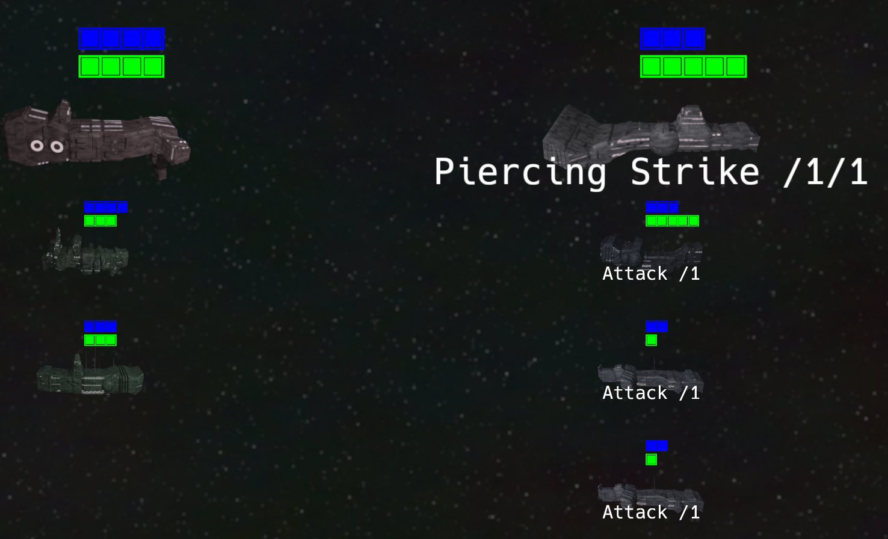
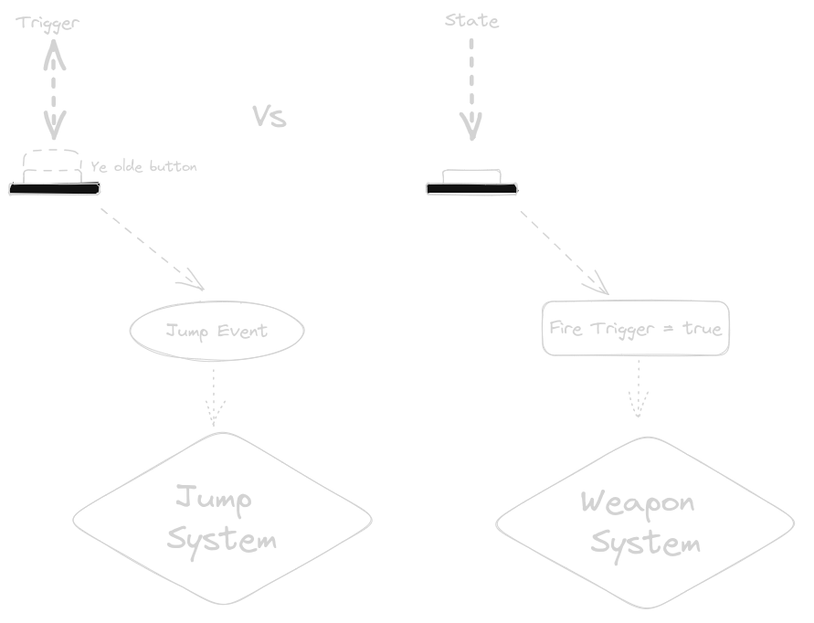

In the last post, I showed some of the goals I want to achieve with my game. Including some early screen shots. I decided to replace the AI generated ships with some procedural generated ships - lets have a look:
While not exactly beautiful, and not even in the style I want the game to be - it's a better placeholder. It should not agitate people as much, as AI generated art would.
Other than that, due to me being sick all week - not much changed. I made some small progress on the "star travelling map" (fancy), were a player can choose their path through the game.
So instead of game design, this time we'll take a look at a technical aspect.
🔗What Engine am I using
Bevy. Wait... I said wait!
I know its in Rust and I understand that is a hype topic. It is my current language of choice, and while Bevy might be far from complete, doing a prototype in it should be fine.
That inevitably means one thing: I am using an Entity Component System (ECS). And this is a turn based game.
🔗How to Design Entities and Systems for a Turn Based Game
It might not be obvious, but real-time games are far easier to do with ECS. System could be executed slightly out of order, or not at all for some frames. It's not something that a player will notice, or at least care much. If an enemy dies one frame too late it can always be excused. Visible glitches like projectiles passing through enemies are a lot more noticeable, so you're not free to ignore the effects.
In turn based games however, things get dicier. Systems running out of order are immediately apparent.
Attacking an enemy which stands around with 0 health until the next turn? No-go.
Ordering an attack move and the game first attacks and then moves? Not good.
Another problem: Usually all systems run every frame. You cannot design systems that run once per turn. At least, not as easy. While I do have some experience in turn based games and in ECS games, I did not do both at the same time yet. Turns out, the real question to ask is
🔗What is a Turn?
In chess its after you moved your piece. In a game like Slay the Spire its when you hit that end turn button.
But how should systems react to that? In real-time games its pretty easy: You assign the player input to some component and some system will use that and manipulate other components. You can do that in a turn-based game too. For example have a Attack component that has the target and the weapon in it. And once the system handling that is done, remove or clear that component. Oh, why do you get that strange feeling of "wrongness"?
🔗How to Handle Input
I cannot tell for you, but I can tell for me: Components are there to capture the state of the application/game. But attacking in a turn based game is not a state change itself. The state of the game should reflect the action, but not necessarily contain the action as part of the state. (Of course there are exceptions to that rule, this is just the general advice of avoiding littering your entities with input components)
Events (or Signals) are part of most ECS'. And a good fit for the discrete nature of input in a turn based game. You would not want to use it for real-time games mostly. For example, pulling the trigger to fire non-stop in an action game does not lend itself well for events. The player holding the trigger is part of the state of the game. On the other hand, the player pressing jump should only be part of a component, if they can vary the height of the jump by pressing longer or shorter. If not, an event will most likely suffice.
🔗ECS Systems
Now for my game that means, every system can run continuously (and if I wasn't a pedantic, even ignore the order partially - one frame more or less won't hurt). Most will only do something if they receive an event. This helped also in determining the solution for another problem: When should the AI execute its turn?
🔗The AI's Turn
There's not much of an AI in the game. Still, it has to perform its turn execution at some point. Previously it executed immediately after the player did. That is a problem. For the player, it looks as if the AI did nothing - because all units just "jumped" and were done.
So I added a hacky ai_can_move field that was read and modified by multiple systems. That way I could animate the player action, wait a short moment and execute the AI actions. It works, but it was not nice having that flag and the toggling logic.
What I really wanted ... and "now its ok for the AI to execute its moves" event. Far simpler than the flag.
🔗Game "Model Components" and "Visual Components"
With that all "solved" for now, I still had to figure out how to represent all the entities. I wanted the game to work without any graphics. So I created a "game model", based on entities. They would just contain the components required to run the turn based systems. Systems that rendered things should use their own entities and keep them in sync with the model entities.
And I immediately ignored that and added Sprite components to model entities (in a system outside of the core game systems mind you). This made implementing the prototype faster, but I would have to refactor the code to have a separation later.
But I noticed, even for my game - that was not true. At least not completely. As long as I would not touch model components in other parts of my game - I could add and remove any components I liked. Same for the other way around, model systems should not touch other components. With one exception, model systems are allowed to remove entities, and therefore delete components of other systems. Removing an entity should therefore be accompanied by an event, so other systems can react. This does not have to be explicit, Bevy for example sends a RemovedComponent event. But if you need more data, a custom event would be the choice.
🔗How to Handle Mixing Visual and Game Logic Components
This is, of course, dangerous to some degree. If you are careless, this might leave core game components in a desolate state. But it saves time and performs (not really important here) better. So lets summarize the rules to make it work:
- Only core game logic systems may modify game logic components.
- Only core game logic systems may remove game logic entities. They should send events in that case.
- Non core game logic systems may add and modify their components to game logic entities. They must also ensure to clean up after themselves by removing components when systems go out of scope.
- Non core game logic systems must handle entities suddenly disappearing and appearing.
🔗Conclusion
This time we have taken a look at how to design entities to work for the core game and one or more scenes. Events are a key element to keep things simpler and loosely coupled. ECS obviously is not the one-size-fits-all solution, but with some thinking the shoe fits quite good.
I played some Shogun Showdown (purely for research purposes of course). I did promise to do a review of another game, but that will have to wait. So next time, really: A review of shogun showdown, from a core mechanics point of view.